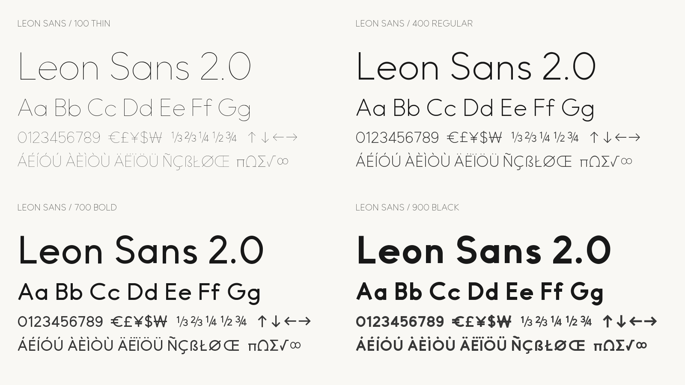

Leon Sans is a geometric sans serif designed by Jongmin Kim. Its circular bowls, open shapes, and clear vertical strokes give the family a simple, distinctive voice. The project began in 2019 alongside the separate JavaScript Leon Sans project. This font distribution provides conventional OpenType files that can be installed on a computer or used on the web.
Version 2.0 introduces a continuous weight axis from Thin at 100 to Black at 900. The heavier styles use adjusted joins and counters to maintain legibility while preserving the original geometric character. The family includes Latin letters, accented characters, numerals, punctuation, and combining marks. Kerning and mark positioning support text composition across the weight range.
Leon Sans is distributed under the SIL Open Font License, version 1.1. Editable UFO masters, the designspace, and reproducible build scripts are available in the project repository. Designers can explore the weight range in headings, short passages, and interface typography, checking spacing and line length in the intended application.
